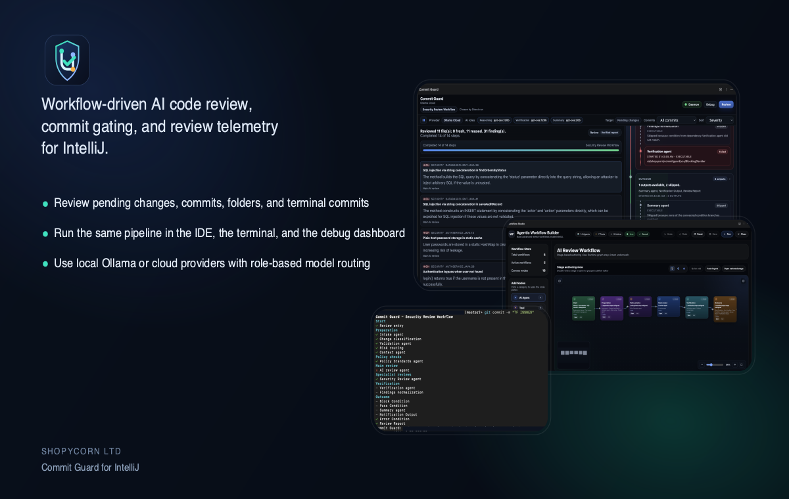
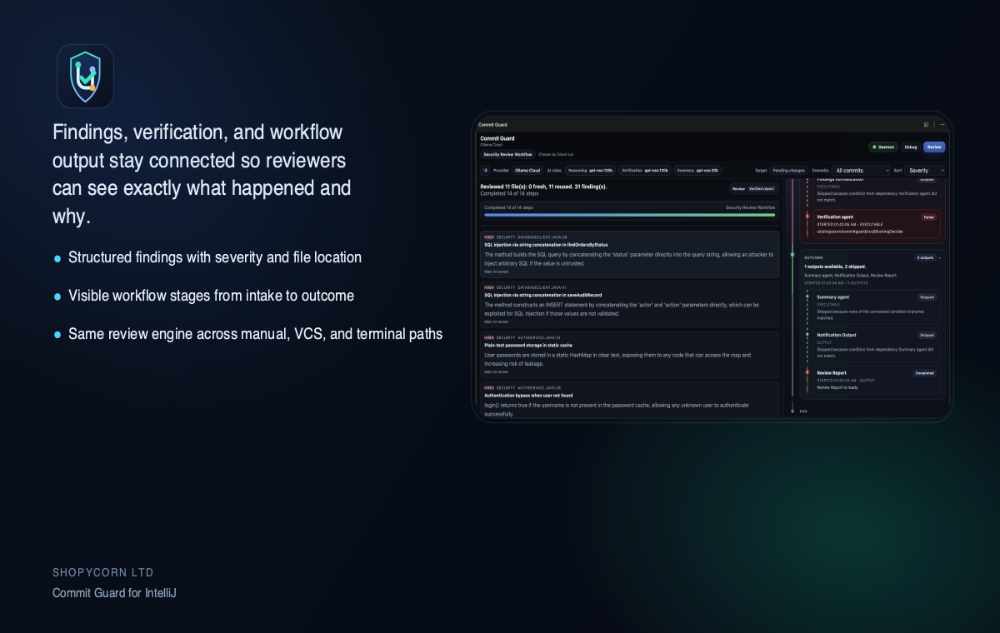
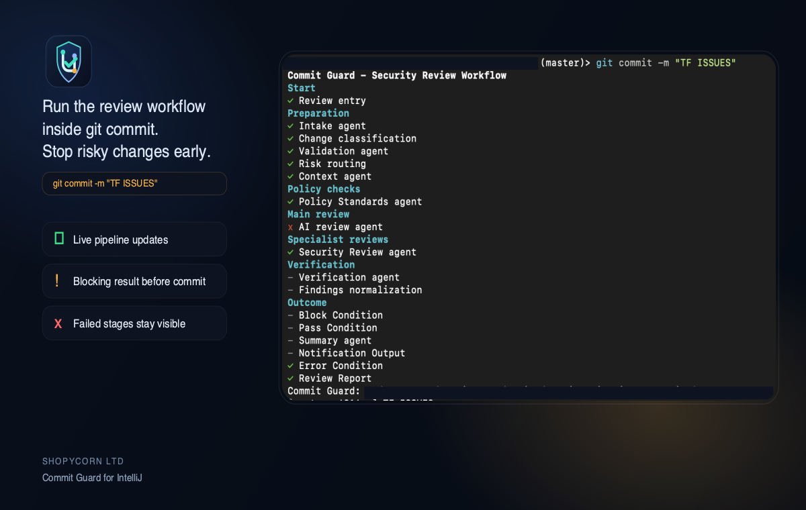
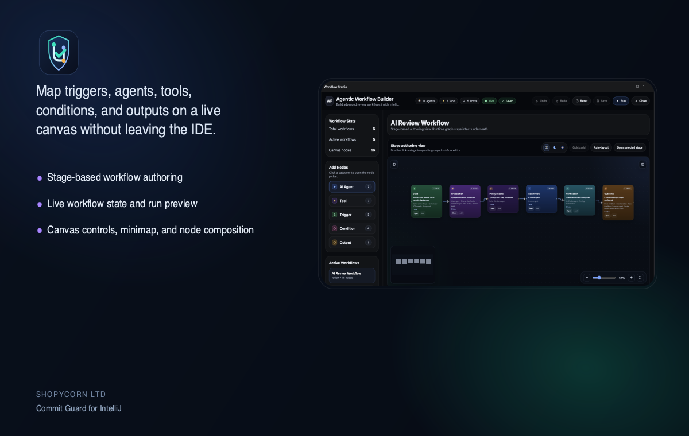

Review with structure
Run workflow stages for intake, classification, policy checks, AI review, verification, and output generation.
Commit Guard brings workflow-driven review, terminal commit gating, model routing, and review telemetry into IntelliJ. Review pending changes, commits, folders, and staged terminal commits with the same engine.

Commit Guard is built for teams that want visibility and control, not just one more AI prompt box.
Run workflow stages for intake, classification, policy checks, AI review, verification, and output generation.
Use the same workflow logic inside IntelliJ and from terminal-driven Git commits through the terminal commit gate.
Debug provider calls, daemon health, workflow execution, and handoff-memory compaction with real telemetry.
Start with local Ollama and move to cloud providers, advanced workflows, and workflow authoring when needed.
Findings, workflow steps, debug dashboards, and terminal gating all stay connected so teams can trace decisions quickly.

See findings, workflow stages, selected provider roles, and final review outputs in one place.

Surface workflow progress directly in the terminal when commit hooks are enforcing policy.

Author and inspect stage-based review workflows visually inside IntelliJ.
This public site hosts the Developer EULA, Privacy Notice, Security policy summary, and marketing pages required for Marketplace publication.